Statistical Mechanics
情報統計力学, スピングラス, 相転移, マルコフ連鎖モンテカルロ法. Information statistical mechanics, spin glasses, phase transitions, Markov chain Monte Carlo.
市川 佑馬 · Ph.D.Ph.D. (The University of Tokyo)
Research Director, Fujitsu Limited
Project Researcher, RIKEN AIP
情報統計力学と学習理論を礎に, 組合せ最適化から大規模言語モデルの極限圧縮・新規アーキテクチャまで, 理論と実装の両輪で探究しています。 Grounded in statistical mechanics and learning theory, I explore everything from combinatorial optimization to extreme LLM compression and novel architectures — in both theory and practice.

東京大学にて博士号(Ph.D.)を取得後, 富士通株式会社に入社。現在は Research Director として, また理化学研究所 革新知能統合研究センター(RIKEN AIP)の Project Researcher として研究に従事しています。 After receiving a Ph.D. from The University of Tokyo, I joined Fujitsu Limited, where I currently serve as a Research Director. I am also a Project Researcher at the RIKEN Center for Advanced Intelligence Project (AIP).
専門は情報統計力学・高次元統計を基盤とした機械学習の理論解析, および組合せ最適化と大規模言語モデル(LLM)の圧縮技術(量子化・枝刈り)・新規アーキテクチャ設計です。NeurIPS, ICLR, ACL, AISTATS などの国際会議や物理学・応用数理系ジャーナルで成果を発表し, OneComp や QQA4CO などのオープンソースソフトウェアとしても公開しています。 My expertise lies in the theoretical analysis of machine learning via statistical mechanics and high-dimensional statistics, combinatorial optimization, and LLM compression (quantization and pruning) as well as novel architecture design. I publish at venues such as NeurIPS, ICLR, ACL, and AISTATS, and release open-source software including OneComp and QQA4CO.
Recruiting — 基盤モデルの圧縮(主に LLM 量子化)や, Transformer とは一味違う新規 LLM アーキテクチャの開発を一緒に研究する仲間を募集しています。カジュアル面談・1on1 いつでも歓迎です。 Recruiting — We are looking for researchers to advance foundation-model compression (primarily quantization) and to build next-generation, non-Transformer LLMs. Casual chats and 1-on-1s are always welcome.
情報統計力学, スピングラス, 相転移, マルコフ連鎖モンテカルロ法. Information statistical mechanics, spin glasses, phase transitions, Markov chain Monte Carlo.
高次元統計, 学習ダイナミクス. High-dimensional statistics, learning dynamics.
最適化のための学習, ヒューリスティクス, シミュレーテッドアニーリング. Learning for optimization, heuristics, simulated annealing.
アーキテクチャ, 圧縮, 量子化, 枝刈り. Architecture, compression, quantization, pruning.

arXiv:2604.11155
テンソルネットワークによる自由エネルギー評価とポピュレーションアニーリングを融合し, スピングラス系の低温サンプリングを高精度化する手法を提案. Combines tensor-network free-energy estimation with population annealing to achieve accurate low-temperature sampling of spin-glass systems.
arXiv:2603.28845
QEP, GPTQ, DBFなどの最先端量子化手法を統一APIに集約し, 1行のコードでLLM圧縮を自動実行するOSSライブラリを開発. An OSS library unifying state-of-the-art quantization methods (QEP, GPTQ, DBF, etc.) behind a single API — compressing LLMs with one line of code.
ACL 2026 Oral
トークン単位の水平スキャンを階層的な垂直スキャンに置き換え, KVキャッシュのトラフィックを削減する新アーキテクチャを提案. メモリあたりスループットを最大10³倍に向上. Replaces horizontal token-by-token scanning with vertical, multi-resolution context scanning, cutting KV-cache traffic and yielding up to 10³× higher throughput per unit memory.
arXiv:2602.17063
ランダム初期化された重みの符号が学習を通じて固定化される現象を発見し, それがサブビット圧縮のボトルネックになることを示した. Discovers that randomly initialized weight signs persist through training, and shows this "sign lock-in" bottlenecks sub-bit model compression.
arXiv:2512.24545
複数のエンベロープを持つ二値行列分解により, 1bit級の極限量子化でも精度を維持する重み表現を提案. Proposes a multi-envelope double binary factorization that preserves accuracy even under extreme 1-bit-class quantization.
arXiv:2512.01546
層単位量子化からサブモジュール単位量子化までを単一の最適化問題として統一する枠組みを提案. A unified optimization framework spanning layer-wise to submodule-level post-training quantization.
arXiv:2510.10693
Straight-Through Estimatorによる量子化学習のダイナミクスを高次元極限で解析し, その振る舞いを理論的に特徴付けた. Analyzes the learning dynamics of quantized models trained with the straight-through estimator in the high-dimensional limit.
NeurIPS 2025
層単位量子化で生じる誤差が後続層へ伝播する効果を明示的に補正し, 低ビット量子化の精度を大幅に改善する手法QEPを提案. QEP explicitly compensates for quantization errors propagating to subsequent layers, substantially improving low-bit post-training quantization.
ICLR 2025
勾配ベースサンプリングと並列準量子アニーリングにより, GPU上で大規模組合せ最適化を高速に解くソルバーを提案. A GPU solver for large-scale combinatorial optimization via parallel quasi-quantum annealing with gradient-based sampling.
Transactions on Machine Learning Research (TMLR)
連続並列緩和により, 組合せ最適化問題の質の高い多様な解を同時に発見する枠組みCPRAを提案. CPRA finds diverse, high-quality solutions to combinatorial optimization problems simultaneously via continuous parallel relaxation.
Journal of Statistical Mechanics: Theory and Experiment, 073402 (2025)
高次元極限のVAEを解析し, 後部崩壊が生じる正則化係数の閾値とレート歪み曲線のデータサイズ依存性を厳密に導出. Derives the exact threshold of posterior collapse and the dataset-size dependence of the rate-distortion curve for VAEs in the high-dimensional limit.
Mathematical Sciences Practice Research Letter, LMSR 2024-4
大規模マルチモーダルAIの災害分野への応用可能性を整理し, 実践上の課題を論じた. Surveys applications of large multimodal AI to disaster response and discusses practical challenges.
Physical Review E 112, 045306
目標分布のエネルギー情報を活用するratio divergence学習を制限ボルツマンマシンに導入し, KL学習を超える性能を実証. Introduces ratio-divergence learning that exploits target-energy information in RBMs, outperforming standard KL-divergence learning.
Transactions on Machine Learning Research (TMLR)
min-max問題の典型的性質をレプリカ法により解析し, 解の構造を統計力学の視点から特徴付けた. Characterizes the typical-case properties of min-max problems via the replica method from a statistical-mechanics perspective.
arXiv:2408.14756
画像基盤モデルの表現力を活用し, 追加学習なしで時系列異常検知を行う手法を提案. Leverages image foundation models to detect time-series anomalies without any additional training.
ISSAC 2024
フリップグラフ探索を適応化することで, 行列積アルゴリズムの新たな高速スキームを発見. An adaptive flip-graph search discovering new fast matrix-multiplication schemes.
NeurIPS 2024
連続緩和のエントロピー項を制御することで, 教師なしGNNベース組合せ最適化ソルバーの性能を改善する手法CRAを提案. CRA improves unsupervised GNN-based combinatorial optimization by controlling the entropy term of continuous relaxation.
AISTATS 2024
線形VAEの学習ダイナミクスを解析し, 後部崩壊の閾値, 冗長な潜在空間の落とし穴, KLアニーリングによる高速化を理論的に示した. Analyzes learning dynamics of linear VAEs, revealing the posterior-collapse threshold, pitfalls of superfluous latent space, and speedup by KL annealing.
Journal of the Physical Society of Japan, 91, 114001
特異値分解で表現した学習後の重みを持つ深層ボルツマンマシンを統計力学的に解析し, その典型的性質を明らかにした. A statistical-mechanical analysis of deep Boltzmann machines whose trained weights are represented via singular value decomposition.
arXiv:2211.14024
並列適応アニーリングを導入し, 自己学習MCMCの適用範囲を大幅に拡張する手法を提案. Parallel adaptive annealing extends the applicability of self-learning MCMC toward unlimited settings.
1行のコードでLLM量子化を自動実行するOSSライブラリ. QEP・QQAなどの独自アルゴリズムを搭載し, 1bit級の極限圧縮を実現. Quantize any LLM with a single line of code. Powered by QEP, QQA, and more — down to 1-bit extreme compression.
詳しく見るLearn more → Combinatorial OptimizationGPU上で動く準量子アニーリングソルバー. 20+の問題クラス, Streamlitダッシュボード, CLIを備えたPyTorchツールキット (ICLR 2025). A GPU quasi-quantum annealing solver: 20+ problem classes, a Streamlit dashboard, and a CLI in one PyTorch toolkit (ICLR 2025).
詳しく見るLearn more → Learning Theoryレプリカ法・オンライン学習理論による機械学習の理論解析と数値実験を統一するシミュレーションパッケージ. A simulation playground unifying replica-method and online-learning-theory analyses of machine learning models.
詳しく見るLearn more →1ビットAI推論 (1-bit Quantized AI for Inference)1-bit Quantized AI for Inference
表現学習の統計力学: 機械学習における低次元表現の獲得と利点Statistical Mechanics of Representation Learning: Acquisition and Advantage of Low-Dimensional Representations
表現学習の統計力学: 機械学習における低次元表現の獲得と利点Statistical Mechanics of Representation Learning
レプリカ法による変分オートエンコーダの学習ダイナミクスにおける最適解への到達可能性Optimal-solution reachability in VAE learning dynamics via the replica method
学習を反映した重みパラメータを持つ深層ボルツマンマシンの統計力学的解析Statistical-mechanical analysis of deep Boltzmann machines with trained weights
van Hove理論を用いたスピングラス緩和過程の解析Analysis of spin-glass relaxation via van Hove theory
富士通, LLM新アーキテクチャ「PHOTON」を開発 — GPUあたりのスループットがTransformerの最大475倍Fujitsu develops "PHOTON," a new LLM architecture — up to 475× the per-GPU throughput of Transformers
富士通がLLMの量子化ソフトを公開へ, 1ビット化しても性能を9割保持 — 日経XTECHFujitsu to release LLM quantization software — 90% accuracy retained even at 1-bit — Nikkei XTECH
「手挙げ制度」で1万3000人が大異動 新卒5年目の部長級誕生 — 日経ビジネス13,000 employees relocated under self-nomination system; fifth-year employee reaches director level — Nikkei Business
【対談】AI分野の国際学会NeurIPS2025に採択！若手研究者が語る, 次世代AI研究 — 富士通 広報note[Interview] Accepted at NeurIPS 2025 — young researchers on next-generation AI research — Fujitsu PR note
「働きながら博士進学」に道 富士通や島津製作所, 新領域のコア人材に — 日経新聞A path to doctoral study while working — Nikkei
AIの軽量化・省電力を実現する生成AI再構成技術を開発し, 富士通の大規模言語モデル「Takane」を強化 — 富士通株式会社Fujitsu develops generative-AI reconstruction technology for lightweight, power-efficient AI, strengthening its LLM "Takane"
【一日密着】博士人材の新たな未来！富士通研究員の一日 — 卓越社会人制度[A Day in the Life] The new future of Ph.D. talent: a day with a Fujitsu researcher
NeurIPS2024に参加・発表しました #1 ～GPUを用いた次世代組み合わせ最適化ソルバー～ — Fujitsu Tech BlogPresenting at NeurIPS 2024 #1 — next-generation GPU combinatorial optimization solvers — Fujitsu Tech Blog
共同研究・講演依頼・カジュアル面談など, お気軽にご連絡ください。 For collaboration, speaking requests, or a casual chat — feel free to reach out.